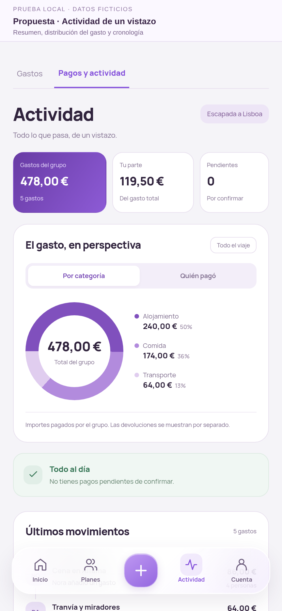
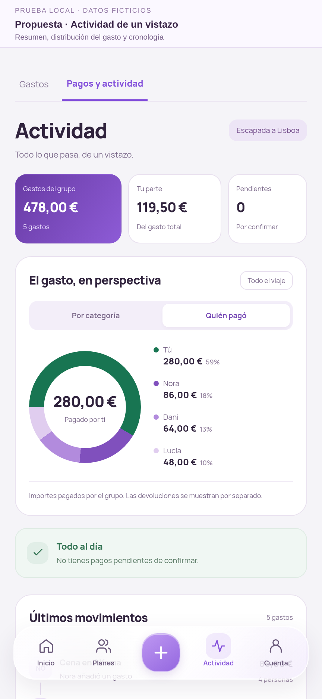
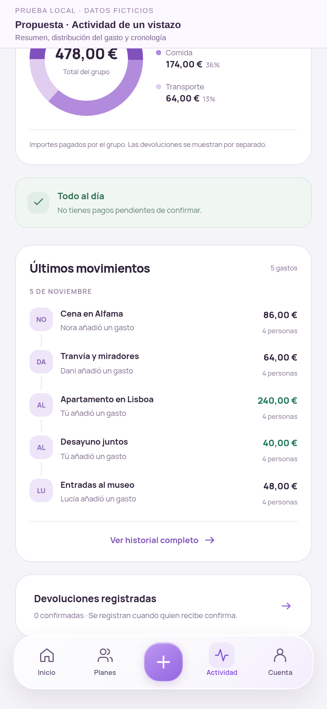

VISTA PREVIA · DATOS FICTICIOS
Actividad, de un vistazo
Un resumen compacto, un gráfico que alterna entre categorías y quién pagó, y los movimientos ordenados en una cronología.
Ver las capturas



Las devoluciones permanecen separadas del gasto. Tu parte del gasto no equivale a tu saldo pendiente.